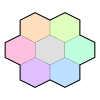

On the Subject of Tetriamonds
Counting to four! It's not just one more?
This module will display six triangles in the shape of a hexagon. The triangles will not flash, but they will move out from the center and return when the sequence finishes. This will be referred to as a pulse. Triangles will also either face left or right. The colours are: rose, orange, lime, jade, azure, violet and grey. In order to determine what triangles to press, follow the following rules.
Determining colours
Whenever you obtain four adjacent colours, you should continue to the next section. The order will not be determined by this step.
- Place the pulsed colours on the indicated positions in the graph.
- If none of your pieces were grey, or the non-grey colours are adjacent, your colours are the colours that did not pulse.
- If the three colours form a straight line on the graph, your colours are the received colours plus the first available colour clockwise on the module from the first received colour.
- Otherwise, your colours are the colours that pulsed plus the colour opposite on the graph of the first non-grey piece.
Determining shape
Only one rule applies every time.
- If all three pulsing triangles have the same orientation, construct a triangle.
- If the first two pieces match in orientation, construct a rhomboid.
- If both rules did not apply, construct a U-shape.
Determining order
Always append colours at the end of your current list.
- Take all pulsing colours obtained in order.
- Add the first not already taken colour clockwise from the first pulsing colour on the module and repeat this for the second an the third colour.
- Add the remaining colour, which did not appear on the module.